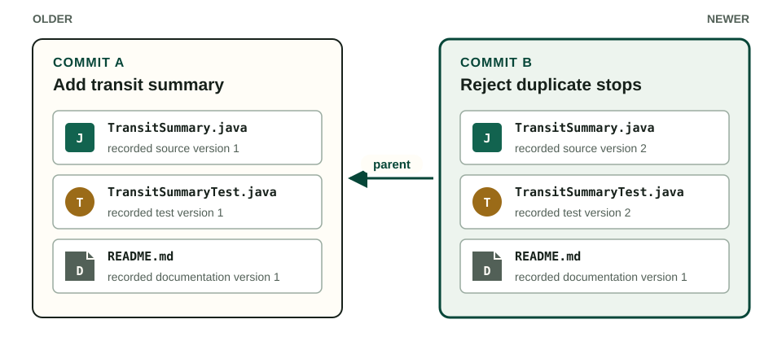
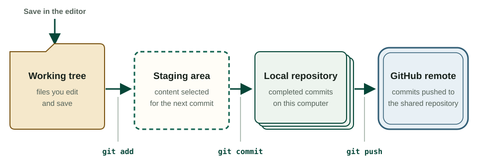
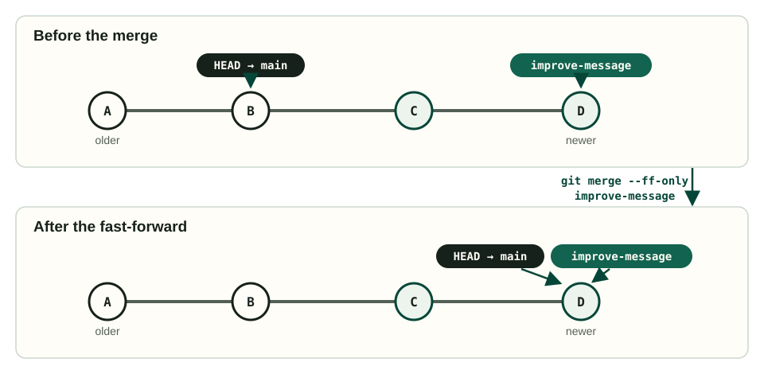

Preparation guide 5
Git and GitHub
Understand why projects need version control, then record commits, share work, use branches, and recover changes.
You probably already use software that saves files, synchronizes folders between computers, and shares documents with other people. Those tools are useful. A software project, however, needs a history of changes that span many files, and it needs a way to combine work performed by several programmers. Version control gives a project that history and provides operations for combining changes.
1. Why Software Projects Need Version Control
Consider a change to the transit program used in these guides. A new rule for classifying early arrivals may require changes to TransitSummary.java, several tests in TransitSummaryTest.java, and a short explanation in README.md. These edits belong together. The source without the new tests is incomplete, while the new tests without the source fail. What we want to preserve is one state of the project in which the three files agree.
A synchronized folder treats those files separately. It can copy each saved edit to another computer and may retain earlier versions of each file. It does not know that one version of the Java class, one version of the test class, and one version of the README form a single change. Restoring the Java file from Tuesday while leaving Wednesday's tests and build file in place may produce a project state that never existed and does not build.
A version-control system records a version of the project as a unit. In Git, that recorded state is a commit. A commit lets us return to the source, tests, build files, and documentation as they were at the same point in the project's history. It also lets us compare two project states and see the complete set of files changed by a bug fix or feature.

Saving and Recording a Version Are Different Actions
Programmers save files frequently while working. Many of those saved states are temporary: the program may not compile while a method is half-written, or a test may fail while its implementation is being changed. Saving is still necessary, but every press of Save does not deserve a permanent entry in the project history.
Git separates ordinary file saves from commits. You can save, compile, run tests, revise the code, and repeat that cycle without creating a commit. Once the files describe one coherent change, you select the content that belongs to the change and commit it. You decide where the meaningful checkpoints are.
The commit also carries a message. The diff already shows which lines changed, so a useful commit message explains the purpose of the change: Reject duplicate stop identifiers is more informative than Changed three files. Months later, the history can answer questions that a directory full of dated copies cannot answer cleanly: which change introduced this behaviour, why was the build configuration updated, and which tests were added with the implementation?
Combining Work from Several Programmers
Shared folders become especially awkward when two people edit at the same time. Suppose Alice changes the validation code near the beginning of a long Java file while Bob changes its output formatting near the end. Both changes may be valid. Choosing Alice's entire file discards Bob's work, while choosing Bob's file discards Alice's.
Git compares both sets of changes with their common earlier version. When the edits do not overlap, Git can usually combine them. When they do overlap, Git marks a merge conflict and asks a programmer to decide what the combined source should say. Git handles the bookkeeping; it cannot decide the intended behaviour of the program. The programmer must resolve the source, compile it, and run the tests.
Branches extend the same idea. Each programmer can record a sequence of commits without immediately changing the main line of development. The team can inspect the complete change and its tests before merging it.
Local History and a Shared Copy
Git keeps the repository and its history on your computer. You can inspect differences, create commits, and change branches without a network connection. Until you send the commits elsewhere, that history exists only on your computer.
GitHub can host another copy of the Git repository and control who may read or update it. It also supplies pull requests, issue tracking, and web pages for reviewing changes. Sending commits to GitHub makes them available to collaborators; it does not happen automatically when you save or commit locally.
Git records deliberate project-wide checkpoints and their explanations. It also supports combining changes from several people. GitHub provides a shared location and review workflow for that history.
Learning outcomes
- explain why software projects use version control rather than relying only on a synchronized folder;
- distinguish Git from GitHub and a working tree from a commit;
- clone a repository and identify its local and remote locations;
- inspect, stage, and commit one coherent change;
- synchronize with a remote using pull and push;
- create and merge a short-lived branch; and
- recover an unstaged edit without using destructive history-rewriting commands.
2. What Git Records
Git is a version-control program. A Git repository stores a history of project states called commits. Each commit records the state of the tracked files together with an author, time, message, and link to its parent commit. The links form the project's history.
It is useful to think of a commit as a snapshot of the tracked files. Git does not need to store a separate physical copy of every unchanged file for every commit, but the commit identifies enough information to reconstruct that project state. The link to the parent identifies the state from which the change was made.
A repository initialized with git init contains a hidden .git directory. Git stores its objects, references, and configuration there. The files you normally edit sit beside it in the working tree. Do not edit files inside .git directly; use Git commands to inspect and change repository state.
3. How GitHub Fits In
Most Git operations, including viewing differences, creating commits, and changing branches, run on your computer without contacting a server. Git is a distributed version-control system: a normal clone contains the repository history as well as the current working files.
GitHub hosts remote Git repositories and adds accounts, access control, pull requests, issues, and web views. A local commit is not automatically on GitHub. Likewise, editing a file on GitHub does not silently update an existing local copy.
Use the repository visibility specified by the course activity. A public repository exposes its history, including assignment code, to anyone. Changing a repository from public to private later does not guarantee that earlier public copies disappeared.
4. Tell Git Who You Are
After installing Git, configure the name and email recorded in new commits:
git config --global user.name "Alex Student"
git config --global user.email "alex@example.com"Inspect the result:
git config --global --listThese values label commits; they are not a GitHub password. Use an email connected to your GitHub account if you want GitHub to associate command-line commits with that account. GitHub also supports a private noreply address.
For authentication, choose either HTTPS or SSH. GitHub does not accept an account password as the Git password for command-line HTTPS operations. GitHub recommends GitHub CLI or Git Credential Manager for storing HTTPS credentials; Git for Windows includes Git Credential Manager. SSH uses a key registered with your GitHub account. Follow GitHub's current setup instructions rather than placing a token in a remote URL or text file.
5. Clone the Repository Once
On the GitHub repository page, choose Code, select HTTPS or SSH according to your configured authentication, and copy the URL. In the directory that should contain your projects, run:
git clone https://github.com/ORGANIZATION/REPOSITORY.git
cd REPOSITORY
git status
git remote -vCloning creates a new project directory, downloads the repository history, checks out its default branch, and records the source as a remote named origin.
origin is a short local name for a remote URL. It is conventional, not special to GitHub. A repository can have several remotes, and two local clones can use different short names for the same server location.
Do not clone the same repository before every work session. Reuse the local clone and synchronize it. Multiple clones with nearly identical names are a common cause of editing one directory while building or committing another.
git status reports the current branch and working-tree state. git remote -v reports the fetch and push URLs. Neither command changes anything.
6. Follow Changes Through the Local Repository
Git asks you to distinguish three local views. The working tree contains the files you edit. The staging area, also called the index, specifies the exact content proposed for the next commit. The local repository stores completed commits. GitHub introduces a fourth location: the remote repository. Saving, staging, committing, and pushing therefore do different work, as Figure 2 shows.

git add selects content for the staging area, git commit records the staged content in local history, and git push sends commits to GitHub.git status describes files using four related terms:
| State | Meaning |
|---|---|
| Untracked | The path is in the working tree but is not part of the current commit or staging area. |
| Unmodified | The tracked file matches the version in the current commit. |
| Modified | The working-tree content differs from the version already staged. |
| Staged | The staging area contains content to include in the next commit. |
These are states of content, not permanent labels attached to a file. After you stage a file, edit it again, and save it, the path has both staged content for the next commit and a newer unstaged change in the working tree.
Suppose you change TransitSummary.java and add a test. Inspect before staging:
git status
git diffgit diff shows unstaged changes. Stage the two intended paths:
git add src/main/java/ca/ubc/ece/cpen221/prep/TransitSummary.java
git add src/test/java/ca/ubc/ece/cpen221/prep/TransitSummaryTest.javaNow inspect both views:
git diff
git diff --staged
git statusThe ordinary diff is now empty for those paths because their current content is staged. git diff --staged shows what the next commit would record. Staging does not copy files to GitHub and does not make a backup commit.
7. Commit a Tested Change
Before committing, run the project's checks and review the staged diff. Then:
git commit -m "Handle on-time transit predictions"A useful message states what the change accomplishes. “Changes,” “work,” or “assignment” provides little help when reading history. Use the imperative form: “Handle…”, “Reject…”, “Document…”, or “Add…”.
Make each commit a coherent explanation of one change. It should include the files needed for that change and pass the relevant build. “Small” does not mean one file or one line; it means that the commit has one purpose that another reader can understand and, if necessary, reverse.
Inspect the result:
git status
git log --oneline --decorate -5The commit records only staged content. If you edited a staged file again before committing, the new unstaged edit remains in the working tree and is not part of that commit. This is a feature: the staging area allows a coherent snapshot even when other work is present.
Generated directories such as build/ should be named in .gitignore before they are staged. Ignoring a path does not remove a file already tracked by Git. Check git status after each build and investigate unexpected files rather than blindly adding everything.
8. Exchange Commits with a Remote
At the start of a work session, from a clean working tree, synchronize the current branch:
git pull --ff-onlyThis first fetches objects and branch information from the remote. It then advances the local branch only when no merge commit is required. If Git refuses, read why before choosing a different command. You may have local work to commit, a branch divergence to reconcile, or no upstream branch.
After local commits pass the build:
git pushPush transfers commits, not arbitrary uncommitted file changes. Verify on GitHub that the expected branch shows the new commit. A successful local commit followed by a failed push still leaves the commit safely in the local repository.
For a newly created branch, the first push may need:
git push -u origin branch-nameThe -u option records the upstream relationship so later git push and git pull know which remote branch corresponds to the local one.
Committing and Pushing Are Separate
“GitHub is my backup” is incomplete. Git records only committed content, and GitHub receives only pushed commits. An uncommitted file is absent from both Git history and the remote. Use frequent coherent commits and verify pushes, while still following an appropriate backup practice for work outside repositories.
9. Work on a Branch
A branch is a movable name for one commit, usually the latest commit in a line of development. HEAD identifies the branch currently checked out. Creating a branch does not copy every project file; Git creates another name that initially points to the same commit. New commits move the checked-out branch name forward.
Before starting a focused change:
git switch main
git pull --ff-only
git switch -c improve-arrival-messageEdit, test, stage, and commit on that branch. Push it if it should be shared:
git push -u origin improve-arrival-messageOn GitHub, a pull request presents the branch's commits and diff for review. A pull request is a GitHub collaboration object, not a Git commit. When the change is approved and merged, update the local main:
git switch main
git pull --ff-onlyFor a simple local exercise with no pull request, you can merge locally after testing:
git switch main
git merge --ff-only improve-arrival-message--ff-only is suitable when main has not diverged. Real collaboration sometimes requires a merge or rebase decision. Do not choose one mechanically when Git says the branches diverged; inspect the commit graph and follow the team's workflow.
In the simple case above, the merge does not copy files and does not create another commit. It moves the main branch name forward to the commit already named by the topic branch. Figure 3 abbreviates improve-arrival-message as improve-message so that the two branch pointers remain legible.

main points to B and the topic branch points to D. Afterwards, both names point to D. The commits themselves are unchanged, and Git creates no merge commit.10. Undo One Unstaged Edit
Git can restore tracked content, but the safety depends on what has been recorded. Suppose you made an unwanted unstaged edit to one file. First inspect it:
git diff -- src/main/java/ca/ubc/ece/cpen221/prep/TransitSummary.javaIf you are certain the entire unstaged change should be discarded:
git restore src/main/java/ca/ubc/ece/cpen221/prep/TransitSummary.javaThis replaces the working-tree version with the staged version. An unstaged edit that exists nowhere else can be lost. Name the path explicitly and inspect the diff first.
To remove a file from the staging area while keeping the working edit:
git restore --staged path/to/fileThese two commands solve different problems. Neither communicates with GitHub. Avoid git reset --hard and forced pushes in an introductory workflow: they act on broader state and can discard or rewrite work. Ask for help with the status, log, and intended outcome before using them.
11. Resolve a Merge Conflict
A conflict occurs when Git cannot combine competing changes automatically. Git marks the affected paths and git status reports an unmerged state. Open each conflicted file and decide what the final program should say. Git places the current branch text between a line beginning <<<<<<< HEAD and a line containing =======. The incoming text follows, ending at a line beginning >>>>>>> and the other branch name.
Do not keep both halves blindly. Remove the markers, create the intended valid content, compile and test it, then stage the resolved file. Complete the merge only after all conflicts are resolved and the combined behaviour is verified.
VS Code's merge editor can present the same choices graphically. It operates on the same files and Git index as the terminal. Whichever interface you use, you must decide what the combined program should do.
12. A Work Session from Start to Finish
Use this loop for a small assignment change:
git status
git switch main
git pull --ff-only
git switch -c classify-early-arrivals
# edit and run the project build
git status
git diff
git add path/to/source path/to/test
git diff --staged
git commit -m "Classify early arrivals"
git push -u origin classify-early-arrivalsBefore copying it, explain what state each Git command reads and changes. Then answer:
- Which command proves that the build passes? (It is not a Git command.)
- Which diff shows the exact proposed commit?
- At what point does the new commit first exist?
- At what point can a collaborator retrieve it from GitHub?
- Which command would keep an edit but remove it from the proposed commit?
A command list is not a substitute for git status. Use status between transitions until you can predict its output.
13. Summary
Git records local commits; GitHub hosts remote repositories and collaboration features. The working tree, staging area, and commit history are distinct states. Inspect with status and diff, stage only the intended content, test it, commit one coherent change, and push the commit. Branches separate lines of work. Recovery commands are safest when they name an exact path and you first understand which recorded version will replace it.
References
- Pro Git: Getting a Git Repository
- Pro Git: Recording Changes to the Repository
- Pro Git: Branches in a Nutshell
- Git Reference:
git switch - Git Reference:
git restore - GitHub Docs: Set up Git
- GitHub Docs: Caching your GitHub credentials in Git
- GitHub Docs: Cloning a repository
- GitHub Docs: Pushing commits to a remote repository